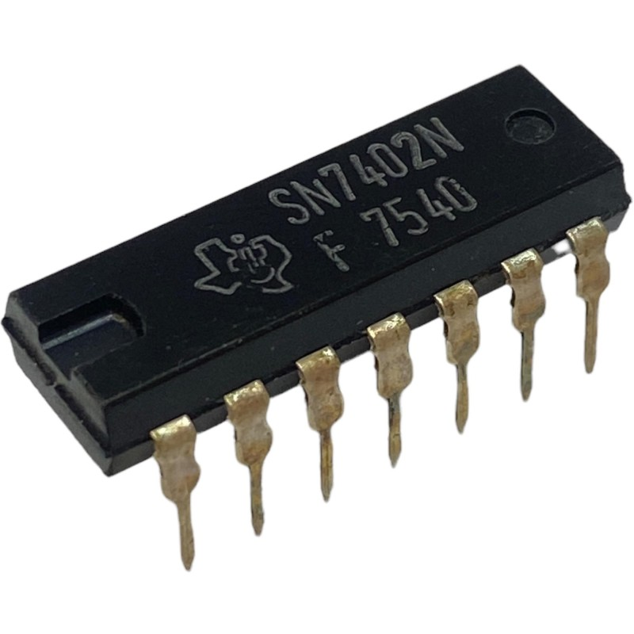
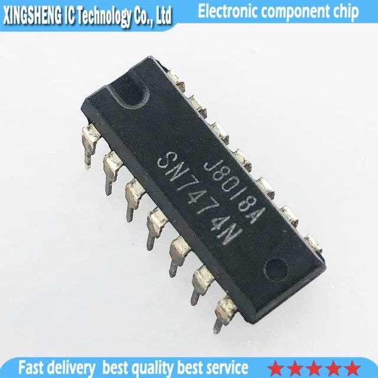
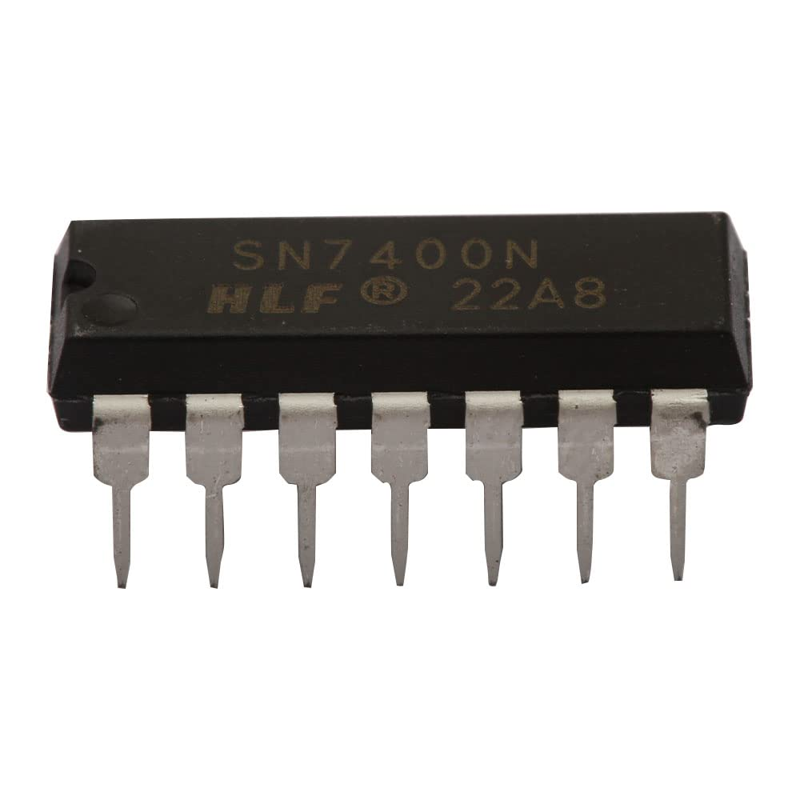
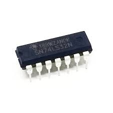
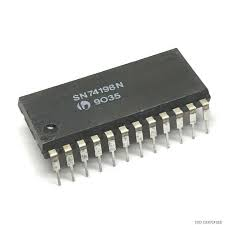

Most Popular

SN7402N
2-INPUT POSITIVE-NOR GATES

SN7474N
DUAL D-TYPE POSITIVE-EDGE-TRIGGERED FLIP-FLIP-FLOPS WITH PRESET AND CLEAR

SN7400N
2-INPUT POSITIVE-NAND GATES

SN74LS32N
2-INPUT POSITIVE OR GATES

SN74198N
8-BIT SHIFT REGISTER